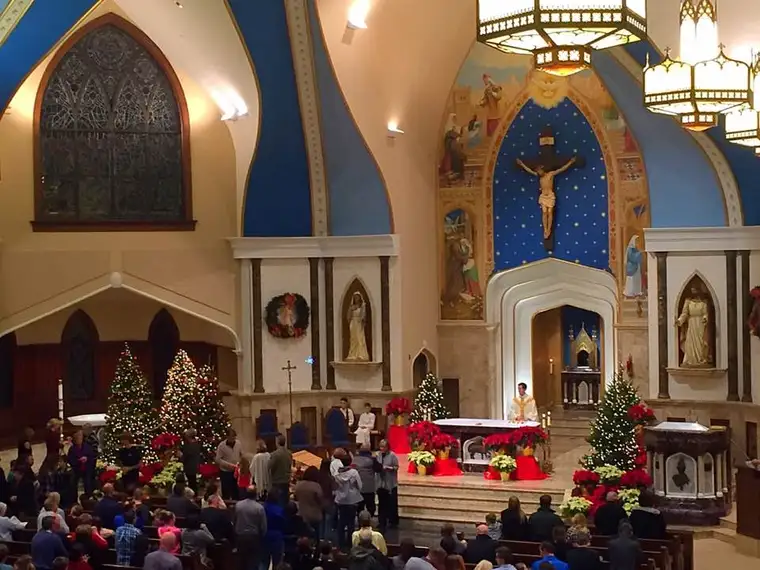
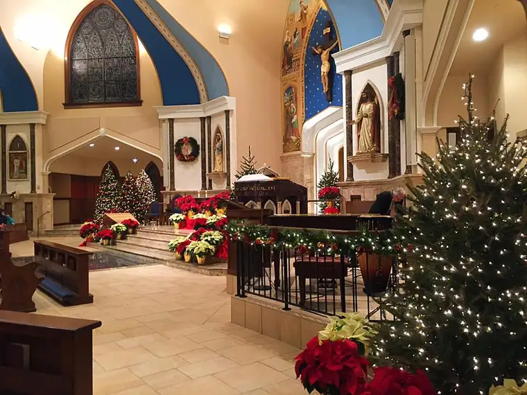
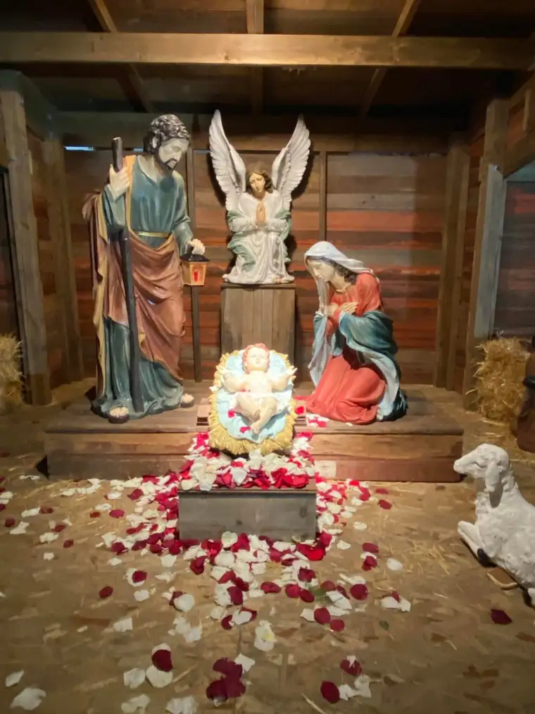
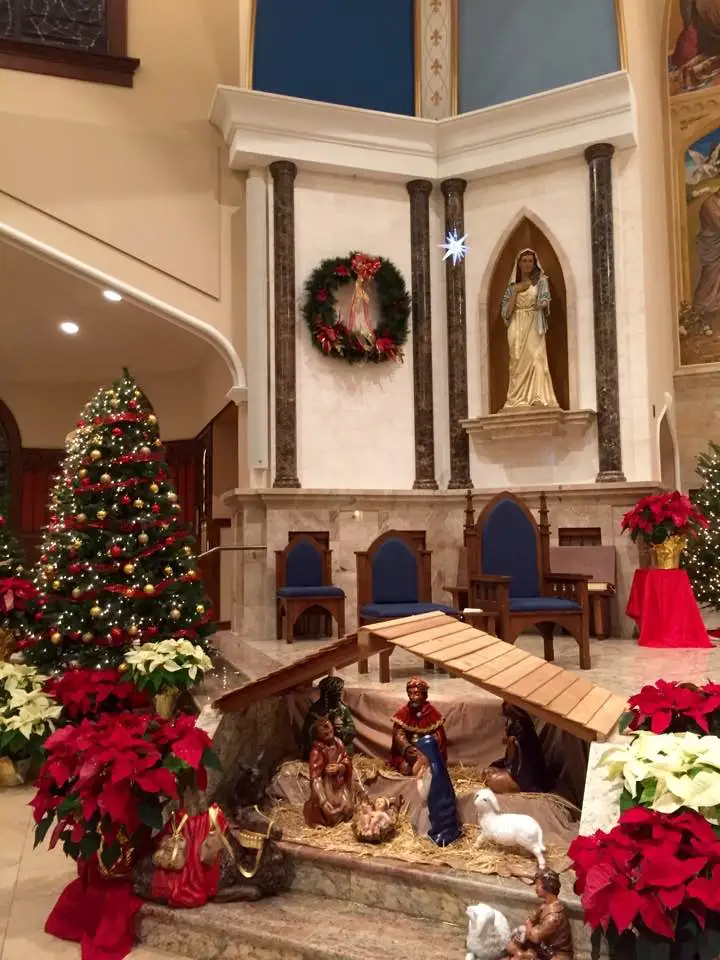
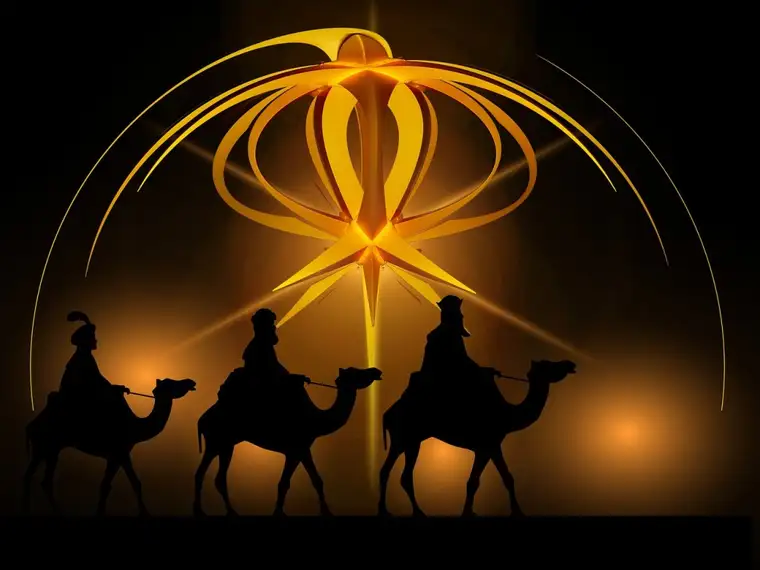

Epiphany 2017 has come and gone, but I’m still holding some of the insights from this year’s celebration in my heart.
The “epiphanies” were delivered in a homily by our assistant pastor, the Reverend Kyle Metzger, on Jan. 7 at Saints Anne & Joachim Church in Fargo, ND.
Father prefaced his homily noting that, it being the Saturday concluding the Christmas season, all the pretty decorations soon would be stowed away for another year. He suggested we take one last long look. I did, and even sneaked up to the front after Mass to snap some photos, and into the choir loft following reception of the Eucharist to capture the whole thing.

Our parish is blessed by a beautiful and young church, only seven years old; we’ll celebrate seven years next month. Much thought went into its design, and as a result, it is filled with color and symbols. And especially at Christmas time, it is a lovely place to sit and behold God’s creative genius, which flows through his children.
The sparkling lights from the trees had me in a post-Christmas daydream of sorts, and as Fr. Metzger talked, I was pulled in more and more.

He spoke about the magi being “the Harvard professors of our day,” the ones who “wanted to make sense of the world.” He said, “In these men, science and religion came together.”
All of the knowledge they’d acquired, he added, didn’t conflict in the slightest with what they’d found in Bethlehem; rather, “It completed it.”
As Father talked, this feeling of continuity through the ages began to seep into my soul. I started to understand the magi in a new way, a way that relates more to our modern world rather than the far-off vision I once held.
And then he began to describe what it must have been like for the magi as they approached the crib of our Lord: “When they entered the stable, they fell to their knees and surrendered every valuable thing that they had.”

Fr. Metzger, a former English teacher, had me mesmerized with his version of the story as I began to envision what it would have taken for them, after a long journey, and everything they’d done to keep the treasures in their bags protected, to then empty them all out in the manager, as if they were nothing at all next to the king on which they now gazed.
Now that’s faith, I thought. It’s simply beautiful to think that these learned men would realize all their knowledge was useless without connecting it to the One who’d come to offer himself to us.
Father then continued to fill out the image. “Imagine them in their splendid robes and diamonds kneeling on the dirty floor of the stable,” he said, and I could just see it, almost as if it were happening right then. I was in awe at the thought of it — high society meeting royalty on the floor of a cold room that smelled of animal dung.

And then, the zinger I wasn’t expecting; that thing that connected everything together, and to my life, right here and now.
“It was the first Adoration chapel on earth,” he said. “Today’s Adorer’s are modern-day magi.”
Though I’m sure I looked somewhat composed on the outside, at the words, interiorly, something was happening. As a regular Adorer of Jesus in the Exposition of the Eucharist, I knew in an instant just what he meant. For several years now, I’ve been journeying, in the dark of night, weekly to see the Lord in our small Adoration chapel — our parish’s version of a manger — and it has changed me.
When I journey out of my home each week and make my way to the “stable,” inside, I find my Lord. My weekly, nightly journey, though not nearly as treacherous, is very analogous to the magi’s trek. This intentional mission to seek him regularly has left me enlightened. And just like the magi, having experienced God here, I find that he woos me continually back.
It is truly a gift, and I each time I arrive, like my fellow “magi,” I kneel down in his presence, surrendering everything I have in that moment. I acknowledge by my actions that I am in the presence of the king. It is humbling, nearly impossible to take it in, but there, I find peace. Even if not perfect understanding always, I know that someday it will come.
I have shed many tears there, too, because I feel so close to the Lord’s heart in the place where he dwells in a particularly real way, and this feeling of warmth and love overtakes me at times. There are other times the tears flow simply because I bring my burdens, and there, I sense him holding me.
It’s hard to describe, but it’s worth that little journey from my home to the chapel. More recently, I have even taken to bringing the cares of my friends along with me. The night of Adoration, I put a call out on Facebook to ask anyone if I can bring their prayers before the Lord, and the response has amazed me. I am honored to bring these petitions to God; indeed, it has become the most important part of my hour, bringing these “treasures” borne of our hearts and heartaches to our merciful Lord.
These are the offerings of our life, in all of its brokenness. And when I lay them down there in the chapel, I feel his quiet response, and know that he is listening and cares for each soul who has entrusted me to bring and entrust them to him.
Until Epiphany 2017, I had never considered myself a modern-day magi, but thinking of it this way has increased my desire to be there; to travel each week to see our precious Lord.
The week after Epiphany, Father talked about the Eucharist, and what a treasure we have in it, not only at Adoration, but each week, or day even, in the Holy Sacrifice of the Mass.
He reminded us that when we come to Mass, “We come not to receive but to give,” explaining the sublimity of the non-bloody sacrifice and how blessed we are in it. He suggested that coming to Mass should not be about whether the choir is on pitch, or the homily the length of our liking. We do not show up at Mass to be entertained or edified, he said, but because we are worshiping the living God, and in gratitude for all he has done for us, we offer ourselves, our time, for him.
As new and old Adorers later met with our senior pastor, Fr. Paul, the message was added to when he said, “One of the most precious things we can give our Lord in 2017 is our time and our presence…The reason we’re going to Adoration is because he is alive!…He’s there, the Risen Christ.”
The words of our priests these past weeks have inspired me greatly, and reminded me that this journey we are on together is a privileged one, and that the Lord we are journeying toward is well worth what we will find when we finally reach him.

Q4U: Our Lord gave all for us. What can we offer him in return?